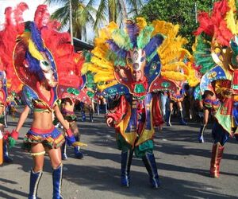

Limón, Costa Rica
In Limón, Costa Rica, family gatherings often revolve around the preparation of traditional Afro-Caribbean dishes like "rice and beans" cooked in coconut milk, accompanied by fried plantains and fresh seafood. These meals are shared during festivals, such as the famous Carnaval de Limón, where music and food bring families and friends together in a joyful celebration of culture.
